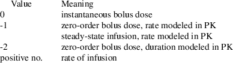
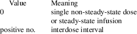
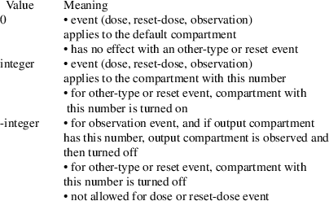
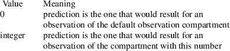
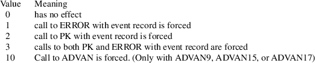
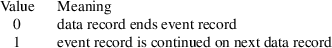
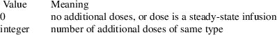

|
1. |
Event Identification (EVID) Data Item |
See Chapter V
for a discussion of "extra" EVID’s:
special names XVID1 XVID2 XVID3 XVID4 XVID5
|
2. |
Time (TIME) Data Item |
Time of event
|
3. |
Dose Amount (AMT) Data Item |

Note: AMT data item must be 0 in a non-dose or non-reset-dose event record.
|
4. |
Dose Rate (RATE) Data Item |

Note: RATE data item must be 0 in a non-dose or non-reset-dose event record.
|
5. |
Steady-State (SS) Data Item |
Note: SS data item must be 0 in a non-dose or non-reset-dose event record.
|
6. |
Interdose Interval (II) Data Item |

Note: II data item must be 0 in a non-dose or non-reset-dose event record.
|
7. |
Compartment (CMT) Data Item |

Note: With a reset event, a compartment is turned on or off after all compartments are reset to their initial status.
When the integer is 1000, it designates the default compartment for output.
When the integer is 100 and the number of compartments is <=99, it is another way of designating the default compartment for output.
|
8. |
Prediction Compartment (PCMT) Data Item |

Note: PCMT data item is ignored in an observation event record.
When the integer is 1000, it designates the default compartment for output.
When the integer is 100 and the number of compartments is <=99, it is another way of designating the default compartment for output.
|
9. |
Call (CALL) Data Item |

|
10. |
Continuation (CONT) Data Item |

|
11. |
Additional Dose (ADDL) Data Item |

Note: ADDL data item must be 0 in a non-dose or non-reset-dose event record. Also, when ADDL data item is nonzero, II data item must be nonzero.
TOP
TABLE OF CONTENTS
NEXT APPENDIX ...